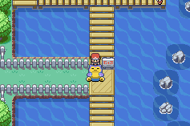
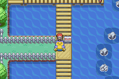

Weg Blockierung
Objekte, die dem Zweck dienen Wege für den Spieler für diesen Moment unpassierbar zu gestalten. Es ist aber visuell dargestellt, dass es dort weitergeht. Die eigentliche Mission ist immer omnipräsent. Durch diese vorübergehende Blockierung des Weges soll eine Herausforderung für die Bewegungsfindung geschaffen werden. Es regt die Neugier des Spielers an und kann eine Rückkehr zum Level oder wiederholte Versuche erfordern, mehrere Pfade zu erkunden.
Der Spieler macht sich dadurch Gedanken darüber wie es an dieser Stelle weitergehen könnte und sucht nach einer Lösung. Die Erkundung nach sekundären Items in nicht storybedingten Gebieten kann der Wiederspielwert eines Spiels durch Erfolge, seltene Artefakte Sammeln oder andere Belohnungen erhöhen, es trägt jedoch nicht zum Fortschritt im Spiel bei.
In ``Pokemon - Schild/Schwert'' stehen ein paar Pokemon im Weg und blockieren den Zugang zur Stadt. Hierbei muss kein Schlüsselgegenstand gefunden, sondern in der Hauptstory weiter voranschreiten werden.
In ``Pokemon - Feuerrot/Blattgrün'' versperrt ein schlafendes Pokemon namens Relaxo den Weg. In diesem Fall muss man das Item ``Pokeflöte'' finden und neben dem Relaxo einsetzen um es aufzuwecken. Nachdem es aufgewacht ist, kämpft man und man hat die Möglichkeit es zu fangen oder zu besiegen.